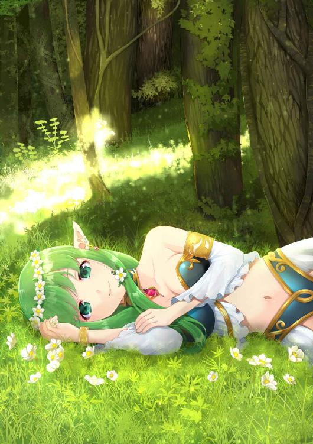

| かわいいエルフには旅させよ | |
| 因幡雄介 | |
| syousetuseisakusyo (2018) | |
かわいいエルフには旅させよ
因幡雄介 著
【ネットに接続されます】
＊本作品はフィクションであり実在の人物・団体等とは関係ありません。
＊本作品の著作権は作者にあり、引用を超える無断転載は著作権法の違反となります。
＊本作品の全部または一部を無断で複製、転載、配信、送信、ホームページに転載することはできません。
＊本作品を示すイメージ画像は、予告なく変更される場合があります。
＊本作品は縦書きでレイアウトされています。
＊本作品はリーディングシステムにより表示に差が認められることがあります。
＊本作品のクレジットなしカラーイラストは、ダブルタップ、あるいはピンチして広げると、拡大して鑑賞することができます。
＊本作品の表紙となるクレジットありカラーイラストは、解像度を低くして制作しています。
マナ（表紙のキャラクター）
おだやかなしゃべり方で、人間になじみ、優しい性格をしたエルフの王女様。
リョウクの愛が重すぎてつらい。
リョウク
若く、顔が整っており、マナの護衛役として旅する人間の男性。
マナを溺愛しすぎてつらい。
――旅するおかげで、われわれは確かめることができる。たとえ各民族に国境があろうとも、人間の愚行には国境がない。
ブレヴォ「楽天家用小辞典」より
マナはあぜんとして、死体が流れる川をながめていた。
周りは緑の山が囲んでいた。人間が作ったのか、丸太でできた橋が向こう岸をつなぐ。ひとりしか乗せられない木の船を操って、船頭が透けた水の上を進んでいた。
下部の葉が卵形で、茎は粗い毛があり、内部に白い髄がつまった花が揺れる。中央が筒状で黄色なので、気持ちを明るくさせてくれた。だけど、根が死体を食べていると想像してゾッとした。
涙が両目に浮かんだ。死人に感情移入することは、いけないことだとわかっていても。粗末な扱いに、胸が苦しくなってくる。
「おい、今度の死体は赤い服を着てるぜ」
「本当だ。くっそー」
「俺の勝ちだ。ははっ」
川べりで、人間の少年たちがはしゃいでいる。彼らは死体の服の色を賭けて、遊んでいるのだ。悲愴感はない。
次の死体が流れてくる。遠くにあり、服の色はわからない。
「う～ん。灰色」
「俺は青」
「俺、黄色」
賭け事が始まる。無神経な態度に、彼らをにらんだ。怒りの感情が、血に溶けて体中を回る。
「黒、だな」
少年たちに混じって、男が急に前に出てきた。彼も人間だった。突然出てきた変な男に、少年たちはビクリとなる。
死体が流れてきた。腐敗ガスが充満して浮く姿に、皆の視線がいく。ボロボロに破れた上着は、黒色をしていた。
「俺の勝ちだな」
男は静かに言った。
少年たちは賭け事に負け、大人が出てきたことにしらけてしまい立ち去った。残ったのは、私と男のふたりだけだった。
「教えて、リョウク」
男の名前を呼ぶ。
リョウクは黒髪に黒目、腰には剣をたずさえていた。顔は整っており、眉はななめに細く、眼光は鋭い。年齢は二十歳と若かった。ただ、多少性格に難があった。
「なんでしょう？ マナさま」
リョウクは、死体が流れる川を見つめながら言った。
「どうしてこの国の人々は、死体を川に流しますの？」
唇が震える。ほんの数日前までいた『光の大陸』では、絶対に見ない光景だった。初めての旅で、衝撃を受け、動揺が激しくなっている。
「この国の人々は、高い土地代を払えないのでございます。それで、死者を弔う墓を作ることができません。火葬や土葬は禁じられているので、川に流すしかないのでございます」
リョウクは丁重な言葉で話した。
「間違ってますわ」
足を川につけ、中へ入っていく。
「なぜ川の中へ？」
「あの死体を引き上げますの。きちんと弔ってあげたいから」
ずんずん水の中へ侵入した。
「やめたほうがいいと思います」
「どうしてですの？ 死者を川に捨てるなど、冒涜しています。あれでは彼らも浮かばれないでしょう。私が供養します」
「いえ、そうではなくて。その川、深いですよ？」
「へっ？ きゃっ！」
足に重りがなくなった。水に食われ、体内に押し込められる。
「ぷはっ！ はっ、早く言って......うっ」
鼻に、つんとした腐敗臭が入ってくる。川はドブの味がした。黒いミミズが楽し気に踊る。
――最低！
吐き気を我慢しながら心の中で叫んだ。旅など出なければよかったと、後悔した。そんな黒い感情も、意識が失われていくうちに消失していく。
――ああ、どうしてこんな所、きたのでしょう......。
抵抗をやめ、よどんだ川に流されていく。意識がなくなり、闇が訪れた。
まさしくここは『黒い大陸』だ。
マナは、生まれたときから人間となじんでいた。
生まれた場所は、『光の大陸』のエルフの国。そこに君臨する王の娘。私は王女。
たまに人間のいる里に下りては、子供たちと仲良く遊んでいた。この大陸には、人間のほかに亜人も多いので、皆めずらしがることはなかった。高貴なるエルフの娘、しかも王女なので、気を遣われていたぐらいだ。
ある日、父親であるエルフの王に、玉座がある部屋まで呼び出された。いつもしている気楽な格好をやめ、宝石をちりばめたティアラをかぶり、胸を大きく開けたドレスを着さされる。王の前でスカートを両手で広げ、丁寧にあいさつした。
「マナ。まだ若いが、今のうちに世界を見ておくのもいいだろう」
王は灰色のひげを手でさすりながらしゃべった。
先祖代々王族が行ってきた女王になる前の儀式、『かわいいエルフには旅させよ』という意味だ。この言葉は代々伝えられ、伝統行事にまでなっている。
「わかりました。お父さま」
嫌がるそぶりをせず、返事する。
人間は好きだし、誰とでも仲良くなれる自信があるので、旅に出るのは苦痛じゃなかった。旅は女王になるための試練。二十九人いる女王候補の中から選ばれたのだから、光栄なこと。心臓がドキドキしてくる。
「どこに行けばいいのですか？」
「うむ。この世界には大陸が二つあってな。『光の大陸』と『黒い大陸』があるのだ。ほかの娘たちは光の大陸を旅させようと思うが、お前はその社交的な性格からして、黒い大陸でもうまくいくだろう」
王は期待を込めて言った。
「黒い大陸？」
目が丸くなった。
黒い大陸とは、女王候補を挫折したエルフが言い出した大陸の名前だ。光の大陸とは違い、異質な国々や人々が住んでいる。光の大陸の常識が通用しないのだ。
黒い大陸を横断できたエルフは、即座に、女王に即位できる。しかし誰も挑戦しない。しても泣きながら、光の大陸に帰ってしまう。
王は意地悪で送り出すのではなく、女王としての評価を上げたいようだ。私は女王となる適性があるのか。ほかの女王候補たちとのあつれきも、実績があれば解消できる。
表情を硬くしながら、
「あっ、あの、お父さま。私ひとりで、その大陸に行きますの？」
「いや。実は黒い大陸を旅した、風変わりな人間がいてな。その者に、案内させようと思う」
王が両手をたたく。召し使いが、部屋にある大きな扉を開いた。見覚えのある人物が立っていた。
「リョウク！」
声を上げると、王の目の前にもかかわらず、男のそばに向かう。
リョウクは小さな頃、よく遊んだ男の子のひとりだ。五年ぶりの彼は、背が高くなり、りりしく成長していた。あの黒い大陸を旅していたとは知らなかった。
「お久しぶりです。マナさま」
精神的にも成長したのか、リョウクは目上の人間にひざまずく。礼儀正しい姿勢だ。娘との同行を、王が許すのもわかる。
好感がもてた。人間の少女が好きな男の子にするような、かわいらしいしぐさをしてみせた。異性がどんな反応をするのか見たい。「美しくなりましたね」という言葉を期待した。
「お久しぶりですの。元気にしてた？」
「ええ。おかげさまで」
「背が高くなりましたね？」
そう言うと、リョウクは王に聞こえないように、そっと長い耳に口を寄せた。
「マナさまこそ、おっぱいが大きくなりましたね」
「............」
下品な言葉に、口元がひきつる。
――思い出しましたわ。この男、平然と汚い言葉を使う男でしたわ。
子供の頃、からかわれたことを思い出した。本人に悪気はない。気に入った女の子には、必ず言うあいさつ言葉だったから。
リョウクの性格が好きになれなかった。
「マナさま」
リョウクの声が聞こえる。
「マナさま」
過去の記憶から呼び戻される。両目を開いた。
「はっ、ここはどこですの？」
起き上がると、リョウクがそばに座っていた。空が布のようなものでおおわれている。
「ここはテントの中でございます。マナさまが川で溺れて気絶している間。このリョウクがせおって連れてまいりました」
リョウクは腰を曲げ頭を下げた。
死体が流れる川を、頭の中でよみがえらせる。死体を引き上げようとして、川で溺れた。
「そう......あっ！」
やけに寒いと思ったら、服を着ていなかった。かけられていた布で裸を隠す。なぜこんなはしたない姿なのか、目でリョウクに訴える。
「服はこのとおり、乾かしておいてあります。マナさまの胸は、このリョウクが、たっぷりと堪能させていただきました」
リョウクの白い歯が満足気に輝いている。
「ひっ、ひあ......」
裸を殿方に見られたことはない。初体験だ。どうしていいかわからず、ただ顔を赤くした。
「さっ、マナさま。服をお着替えになり、テントの外まできてください。私は先に出てます」
普通の態度で、リョウクはテントから出ていく。
徐々に怒りがこみ上げてきた。
――最低な男ですわ！
リョウクのことが嫌いになる。死刑にしてもいいくらいだ。どうして黒い大陸の案内人が、あの男しかいないのか。
感情を抑え、服を着替え、テントの外に出る。空が広がっていた。ポツリポツリと、灰色の地面があるだけだ。空を浮いているような錯覚がする。
リョウクが地面の端に立っている。手には、二つの細長い糸を持っていた。その先はゴムボールのように丸く、宙を浮いている。
「ここはどこですの？」
裸を見られた怒りをふくめながら、リョウクに話しかける。声色が優しいためか、その感情は相手に伝わらないけど。
「『風船の国』です」
リョウクは手に持っている、細長い糸を差し出した。丸い風船がついた糸の先には、フックがついている。
おとなしく受け取った。赤い風船を見上げる。
「風船？ これのことですの？」
「そうです」
リョウクはフックを腰のベルトについている、輪っかにつける。
私の服にもベルトが装着され、リョウクと同じような小指サイズの輪っかがあることに気づいた。着替えているときは、感情が高ぶって見ていなかった。
「俺と一緒に、これで空を飛ばないか？」
「なっ......」
愛の告白に近いせりふだった。
――いったい何を言ってますの？
受け入れられなかった。
風船が風にゆらゆらと揺れる。時間が経過したあと、沈黙に耐えかね口を開いた。
「風船で、飛べと？」
「ええ、そうです」
リョウクが答える。
「あっあの、風船を体につけて、空を飛ぶんですわよね？」
もういちど確認する。
「そうです。このベルトに風船をつけて、空を飛ぶのです」
リョウクは間違いなく、この細い糸を体につけて、頭ほどしかない風船で、空を飛べると言っている。
「無理なのではないかしら？」
困ったように苦笑い。常識で考えればそうだ。
「そもそも、どういう原理で飛べるのです？」
「ではマナさま。どうしてハーレムモノの物語で、男が意味もなく美女にモテモテなのかごぞんじですか？」
「えっ？ 知りませんわ？」
唐突な質問に答えられない。そんな小説、読んだこともない。
「男が美女にモテるのに、理由はないのです！」
リョウクの言葉には、力がこもっていた。
――いっ意味がわかりませんわ。
言葉につまる。
「ご覧なさい。人々はあのように、空を飛んでいるのです」
リョウクが空に向かって、手を差し出した。どこかの高層建築物の屋上にいたようだ。並んだ窓だらけの世界が瞳に映る。
「わぁ......」
見たこともない世界に声をはずませる。風は優しく、緑の髪をなでてくれた。
「飛びましょう」
リョウクはすっと、私のベルトに風船をつけた。体が浮き出し、空に向かって飛び立つ。風になったような、心地の良い気分になる。
「すごい！ 飛んでますわ！」
興奮して叫んだ。
高層建築物がたくさんある。人々はさまざまな色の風船をつけ、建築物の壁際を浮き、窓から家に帰っている。食料を入れたカゴを持ち、風に任せるまま商売をしている者もいた。
子犬が空を飛んでいる。首輪と手綱をつけているので、飼い主と空の散歩をしているのか。ベルトを胴に装着し、「へっへっ」と舌を出しながら、水で泳ぐように犬かきをしている。その姿はかわいらしい。
「ほらあそこっ！ ワンちゃんが空を飛んでますわ！」
リョウクのほうを見た。
「はい、マナさま。もう少し食べられたほうがよろしいかと」
リョウクは私を見上げ、腕を組んだまま、ぷかぷか宙を浮いている。ちょうど真下にいた。
「えっ？ どういう意味ですの？」
「安産型とはいえません。ふくよかにしましょう。栄養管理も私の仕事ゆえ」
「安産......はっ！」
リョウクにお尻を激しい視線で見られている。
「きゃあああっ！ 何のぞいてますのっ！」
体を反転させようとした。なかなか思うように、体が動かない。風船をつけた浮遊に慣れていない。
「ご安心ください。マナさまのお尻をチェックしていいのは、このリョウクのみ。害虫どもから守ってみせます！」
がっしり拳をにぎりしめ誓うリョウク。
「カッコいいせりふですけど、根本的に変態発言ですわっ！ ......うん？」
体が反転でき、視線が地上に落ちた。建築物が建てられている地上で、赤いトマトがつぶれたような跡がある。風船をつけた、がっしりとした体格の男性が、長い袋を肩にかついでどこかに向かっていた。
「あれは、なんですの？」
「死体でございます。風船が割れて、地上に落ちたのでしょう」
リョウクの言葉に息を飲み込んだ。男にかつがれている袋の長さは人の背丈と同じだった。
「どうして、風船が割れますの？」
「原因はいくつか考えられます。カラスに割られた。ぶつかった瞬間ベルトが外れた。風船の寿命が短かったなど、さまざまです」
リョウクは淡々と答える。ショックを受けている私とは対照的だった。
「そんな......」
「大丈夫でございます。私たちがつけている風船は新品で、壊れることは......」
「そんなことではありませんわ！ こんな危険なものをつけるより、地上を歩いたほうが......そうですわ！」
良いことがひらめく。リョウクを連れ、高層建築物の屋上に下りる。風船で浮かぶ人々に向かって大声で訴えた。
「みなさん！ 風船を捨てて、地上を歩きましょう！ 足腰を鍛えられますし、運動にもなります。私たちには、足があるのですから！」
皆興味を持って近づいてきた。私が光の大陸からきた、高貴なるエルフだと知ると話に耳を傾けてくれる。墜落死が多いのか、賛同する者まであらわれた。
これで生活態度が変わると思い、安心してテントの中で休むことができた。
＊
次の日、マナはあぜんとしていた。
「どうして......」
人々は、『風船をつけたまま』地上を歩いていた。私が理想とした『風船を外して』地上を歩く者はいなかった。
「あっあの！」
歩いている白髪の老人に話しかける。高齢のためか、シワが深い。
「おお。あんたは昨日のエルフちゃんじゃないか？ どうしたかの？」
「みんなどうして、風船をつけて歩いてますの？ 意味がありませんわ」
「どうしてかと言われても、この国は高層建築物が多くての。皆風船をつけて空を飛ぶことは、危険じゃとわかっているが、やめられんのじゃ。ワシみたいな老人だと、歩くのもめんどくさいわい」
「そんな......めんどくさいからって......」
「安心せい。ちゃんとみんな、お嬢ちゃんの言うことを守っておるわい。地上を歩くなぞ、久しぶりじゃ。ほっほっほっ」
老人はふわふわ歩きながら、空を軽快に飛び跳ねていた。黙って見守るしかない。
「人は、いちど手に入れた、利便性の良いものを、たとえ危険だとわかっていても手放すことはないのです。彼らはマナさまの言葉を忘れ、また空を飛び始めるでしょう。死ととなり合わせだと知っていても」
リョウクは静かに言った。
ぼうぜんと、建築物の壁を、上っていく人々をながめる。
風船が人の魂のように見えて怖くなった。
マナは黒い大陸にある、次の国に入った。
馬を買い、荷物を運んでもらう。たてがみや皮膚が黒く、鼻づらだけは灰色の馬だ。操作ができないので、手綱をにぎっているリョウクの背中にくっついていた。
「なんですの？ 甘い匂い」
鼻をクンクン鳴らす。木造建築が多い。木の壁は黒ずんでいるが、町の人は気にしていないようだ。
「お菓子の国でございます」
リョウクが馬から下りた。私も下ろしてもらう。
馬から離れると、お菓子が置かれた店を回っていく。ゼリー状のお菓子や、粉を固めて平たくしたもの、ひものついたあめなど、さまざまな種類がある。液体を瓶につめた、色彩豊かな飲料水タイプは、光の大陸にはないので目をパチパチさせた。
「おいしそう」
「食べてみますか？」
「お金はありますの？」
「大丈夫です。安くお菓子を販売しているのでございます」
リョウクはお菓子を買ってきた。透明なチューブに、ゼリーが入っているタイプだった。腸詰めのソーセージを思い出す。
「どうやって食べますの？」
「はい。このお菓子は歯で食いちぎるのでございます」
リョウクはおいしそうな緑のゼリーが見える、チューブの端を歯で食いちぎった。端が破れると、ゼリーが出てくる仕組みのようだ。口につけ吸い出す。
「そんな食べ方しますの？」
甘い匂いのせいか、唾液でいっぱいになった。リョウクをまねてチューブの端に歯を立てる。なかなか食い破れない。
「私の力では、食べられませんわ」
「貸してください。私がやりましょう」
お菓子を受け取ると、リョウクはあっさりチューブをかみ破った。
「わぁ。ありがとう」
子供のように喜び、リョウクからお菓子を受け取った。ぷるぷる震えるゼリーを食べるため、口を近づける。
「どういたしまして。マナさま、間接キスですな」
リョウクのぼそっとしたつぶやきに、私の唇がゼリーの前で止まる。お菓子を口から離し、ようしゃなく彼に返した。
「あなたが食べてください。ほかにありませんの？ お腹がすきましたわ」
「ええっ？ なっなぜ？」
ショックを受けているリョウク。
お菓子を購入し、色と味を楽しんだ。
馬はお菓子を与えられ、ペロペロ舌を出し糖分を摂取する。
リョウクはこの大陸を旅しているだけあって、いろんなことを知っており、雑談で私を飽きさせなかった。
細かい溝の入った、小さな容器から白いクリームを丁寧に、スプーンのような細い棒でかき上げ口に運ぶ。柔らかく溶け、甘さが体に染み渡っていった。おいしいのだけど、口に入るまでの時間が長い。
「どうしてこの国のお菓子は、こんなに食べづらいの？」
チューブといい、この溝にわざと入れてあるお菓子といい、すぐに食べられないように細工されている。
「この国の人々は基本的に貧乏で、糖を原料とした、お菓子を食べるしかないのでございます。そこで開発されたのが、この『食べづらいお菓子』なのです。長時間楽しみ、空腹を忘れる工夫がされております」
「それで安くて、量が少ないの？」
「そうです。たとえばこのお菓子。実は他人の身体的特徴を、ピタリと当てることができるのです」
リョウクは五本のクッキーが、ツクシのように並ぶ黒い箱を見せた。ステックタイプで、表面に文字が焼きしるされている。
「それはすごいですわね」
素直に驚いた。
リョウクが一本、黒い箱から取り出してみせ、
「ステックの表面には、マナさまのお胸のサイズはＧカップとあります。正解ですか？」
「えっ？ いいえ？ 私のサイズはＦのはずですけど？」
「引っかかりましたね。そんなことは、いっさい書いていない！」
「......だましましたね。あっ、ちょっと！ 何メモってますのっ！」
個人情報が書かれたメモを奪おうと、ぴょんぴょん跳び上がる。
リョウクは、長身を利用して、紙を空高く持ち上げてしまった。背が彼より低いので届かない。
「あっはっはっはっ。おたわむれを」
リョウクはまぶしい笑顔を見せる。絶対に渡さないつもりだ。
「もうっ！ ......あっ」
ぷんすか怒っていると、とある集団を見て、感情が急速に冷えていった。
片目に眼帯をつけ、足が悪いのかつえをついている人間や亜人が、病院から出ていく。足先を包帯で巻いている者によく出会う。
「何か悪い病気にかかっているのかしら？」
覇気のない後ろ姿をながめていると心配になる。
「糖病でございます」
「糖病？」
「ええ。人はこういったお菓子を食べると、血糖を下げるホルモンが出ます。それが代謝異常を起こし、糖病になるのです。血糖値が高くなりますと、筋肉や内蔵にエネルギーが取り込まれないため、ああいった失明や足が腐ってしまう壊疽が起こってしまうのです。しかも糖病はいちど発症すると、二度と元には戻らない」
「ええっ？ このお菓子が原因ですの？」
「そうですね。常にホルモンが出続けているのですから、いつか枯渇してしまうのでしょう」
「そんな......」
手に持ったお菓子を見つめる。そんな病気が発症するなんて、初めて知った。光の大陸では糖質な食べ物が少ないので、聞いたこともない病名だった。
「予防はできないの？」
「野菜を食することにより、血糖値の上昇を防ぐことができると、医者から聞いたことがあります」
「それなら、おいしいサラダを作りましょう！」
得意分野なので、声を高揚させて喜んだ。
材料は持って生まれた能力を使えば、簡単に手に入る。植物をどこにでもはやす能力。草木のはえない道ですら、お花畑にすることができる。
能力を使い、植物をはやすと、さっそくサラダを作り始めた。リョウクもサラダ作りを手伝う。ふたりで作ったサラダは、お菓子に負けないぐらい、色とりどりなものができあがった。
「みなさん！ お菓子ばかり食べてないで、おいしいサラダはいかがですか？ 健康にもいいですわよ！」
サラダを並べ、人々に呼びかけた。
風船の国とどうよう、光の大陸からきたエルフということで、めずらしがって近寄ってくる。話しかけてくる男性は、リョウクににらまれ、しゅんと引き下がった。話し相手ならしてあげるのに。
子供がおいしそうな食べ物に、すぐに手を出して、サラダの入った容器を持つ。次々とサラダは売れていく。もちろん無料だ。
一番にサラダを取った男の子が、ポケットから粉を取り出し、サラサラかけていた。その行為が気になった。
「ねえ坊や。何をしてますの？」
話しかけてみる。
「魔法の粉だよ。サラダはこれをかけなきゃおいしくないんだ」
サラダには香辛料がかけられている。それでも物足りないらしい。
男の子は粉をかけ終えると、シャリシャリ頬を緩ませながら食べる。
ちょっとだけ男の子から粉をもらい、それを赤い舌でなめてみた。お菓子の味がした。男の子は、粉にした糖をサラダにかけていた。
目を丸くしたが、周りの人たちも、男の子と同じように糖の粉をかけ、サラダをお菓子にしている。
「みなさん！ その食べ方では、意味がありませんわ！」
つい叫んでしまう。サラダを口にほおばっていた人々は、驚いて目を白黒させた。
「えっ？ でもなぁ。サラダだけだと、なんか味が足りないんだよ」
「そうそう。やっぱり、お菓子と混ぜなきゃだめだよな」
「サラダだけじゃ、まずくて食べられないわ」
健康のためだと訴えても、町の人は誰も言うことを聞かなかった。逆に文句を言い始める。顔しかめて、サラダを置いて去る者もいた。
「そんな......」
「彼らの舌は壊れているのです。病気になるとわかっていても、糖分の摂取をやめられない。どんな健康的な料理を出されても、必ず糖を中に混ぜてしまうでしょう」
リョウクはお菓子を粉にして、夢中で食べる人々を、細い目で見つめていた。
早めに国を出ることになった。糖で着色されたお菓子が、あまりにもきれいで、毒々しく感じるようになったからだ。食べてもらえるように誘っている、毒性生物に見えてしかたがなかった。
マナは馬の背中に座り、リョウクを待っていた。
遮光性のある、ピンク色の布を頭からかぶり、『壁の国』の門番と言い合っているリョウクをながめている。白い肌のため、太陽の光には弱い。空が曇ってきているため、まぶしさと暑さは感じなくなっていた。
「雨が降りそうですわね。それにしても、さっきから何をもめているのかしら？」
慎重に馬から下りると、幅の広い背中をなでた。ブルッと、馬の首が震える。そのしぐさにクスリと笑い、布をたたみ、リョウクの元へ向かった。
怒鳴り声が近くなってくる。聞き耳を立てた。
「いいか！ よく聞け！ マナさまはＧカップに近いＦカップだぞ！ これからも大きくなるお人なのだ！ それを、貴様たちはぁぁぁぁ！」
「きゃあああああ！ 何私の個人情報をバラしてますのっ！」
急いで走りだす。血液を顔まで上昇させると、リョウクを門番から引き離した。入国とまったく関係ないことでもめていた。こんな話を数分間もやっていたと思うと、恥ずかしくて死にそうになる。
壁の国には入れず、城壁の上で町並みを見学という形になった。城壁に設置されてある、石の階段を上る。手入れされていないのか、踏面が崩れていた。
「おのれ、なぜロリ巨乳の魅力をわかってくれないんだ？」
リョウクが悔しさのあまり、親指をかむ。
「そんなもの、わからなくてけっこうですわ。もう」
声を張る。階段を上り終えると、世界が開け、壁の内部が見渡せた。とんがり屋根が多く、その先に鳥が巣を作っている。噴水広場が映った。
赤いペンダントをした女性の石像が、つぼを肩にかつぎ、水を落としている。
「わぁ、壁の中はこうなってますのね」
歩廊を歩く。長い耳が人々の声や、生活音を捕らえた。甘い卵焼きの匂いがしてくる。
城壁の歩廊は、兵士が使うものだけど、平和なので観光客用となっているようだ。胸壁に『落書き禁止』と、張り紙がある。
「どうしてこの国の人々は、こんな高い壁を造ったの？」
両手を後ろにやり、クルリとリョウクのほうを向いた。景色がいいので、気分が高揚してきた。町の中央の丘にあるお城は立派で、ガラスのような素材で壁を造ってあるのか、星のように輝いて見える。
リョウクは、細い目で城壁の中をながめていた。
「敵国から自分たちを守るためでしょう。それが原因で、この国は他国とのつながりがなく、独特の文化を築いています」
「そうなのですか？ なんだか、寂しい国ですわね。あら？」
風によってそよぐ緑の髪を手で押さえ、町の路地に視線をやった。
「あっ、見て。あの人。私と同じエルフですわ」
指さす方向に、褐色の肌を持つエルフがいた。背は小さく、黒髪で、ひげ面のドワーフを連れている。女の子だ。
「あれはダークエルフですね」
「へぇ......えっ？ ちょ、何をしてますの？」
リョウクが胸壁に上る姿を見て、目を見張った。
「褐色のエルフなど邪道！ 色白のエルフこそが正統派なのだ！ わかったかお前たち！」
腕を組み、リョウクは大声で叫ぶ。音声は空中で分解され、何一つ地上に届いていない。
「ひえっ？ 誰に言ってますの！ 恥ずかしいから下りて！」
あわててリョウクを下ろそうとした。
「マナさま。彼らに教えてやらねばなりません。何が、マニア心をくすぐるのか」
「いいから下りなさいっ！」
母親のように、ぷんすか怒る。
リョウクは渋々下りる。口惜しそうに、見えなくなるダークエルフの背中を見つめている。
「あなたったら......うん？ この臭い？」
異様な臭いをかぎ分けた。元をたどっていくと、黒い煙が町を濁している。その下では、炎が踊っていた。
「大変ですわ！ 家が燃えてる！」
胸壁から身を乗り出した。
家の周りで鎧を着た兵士たちが、たいまつで火を放ったようだ。火事になっているというのに、町の人々は無反応。素知らぬふりをして、商売を続けている。
「どうして家が燃えているのに、あの人たちは無反応なの！」
声を荒立てた。火事になれば、皆で協力して、水を運ぶのはあたりまえの行為だ。それをしようとしない。
「あの燃えている家は、反乱軍のアジトなのでしょう。だから見て見ぬふりをしているのでございます」
リョウクは今回も、冷静に状況を語る。眉をひそめた。
「マナさま。国の制度を変えるには、内戦でしかないのです。国の政策を、気に入らない者がいるのでしょう」
「壁の外に出ればいいじゃない！」
「できないのです。この壁の国の人々は、外に新天地を求めることをしないのでございます。もちろん、外から来る者も拒絶します。不安という感情に支配されているから」
情けのない言葉。それがリョウクの答えだ。いつも冷たく、人々を見放す。
「あなたって人はっ！」
感情が高まり声を張り上げた。
「マナさま」リョウクは物静かな声で、私の怒りを抑え、
「昔、壁の国に入ったとある女性が、壁を壊し、人々を外の世界に案内しようとしました。しかし、誰も出ていこうとしなかった。国の王が、中にとどまることを強制しているわけでもないのに」
突然の過去話に、意表を突かれ、口が閉じた。
リョウクは燃えている家を、無感情な瞳でながめ、
「女性は、反乱軍だった少年を、無理やり外へ連れ出そうとした。少年は嫌がった。腕にかみつきもした。外の世界など、想像もしていなかった。抵抗したが、けっきょく兵士たちがやってきて、外の恐怖よりも、死の恐怖が勝り、少年は壁の外に出た」
燃えている家から、ろうそくのように、全身に火が行き渡った人間が出てきた。焦げた臭いが、ここまでやってくる。暴れている姿は、壊れた機械人形を思い出す。
「少年はその後、光の大陸に渡り、美しいエルフたちと出会った。そこはいい人たちばかりで、とてもいい政策を行い、何よりも、人は自由だった。女性は少年に言った。『この世界はどこまでも広がっていて、美しく、悩んでいるよゆうなんてない』と。その言葉の意味が、ようやくわかった」
リョウクは同じ反乱軍である、死にゆく人間を見つめ続けていた。
火が生命を奪い、黒焦げた死体が道に倒れる。兵士たちはその人物に、やりの穂先を突き立てた。そして、空へと持ち上げる。
「成長し、少年は再び黒い大陸へやってきた。女性に出会い、お礼が言いたかった。そして、壁の国に帰ってきた」
リョウクは平然と話を続けていた。
見ていられなくなり、手で口を押さえ、町から視線を外した。涙が浮かぶ。
「出会えたの？ その人と」
「ええ。あそこにいる、石像がそうです」
「えっ？」
町に視線を移した。
噴水広場で、つぼを持った女性の石像。赤いペンダントがきらりと輝き、恋人たちの憩いの場に、少年を助けた女性がいた。殺されたうえに、石像として固められ、なおも生かされ続けている。
悪寒が走った。人のようしゃのない残忍さに。
「マナさま」
「ひっ」
リョウクが目の前に立っていた。初めて彼が怖いと思った。
リョウクの細い腕が持ち上がり、固い皮の指が私の頬をなでる。体が震えて逃げられなかった。青い空をおおった灰色の雲が、彼の表情を隠してしまう。
「人は愚かだ。ただただ、愚かだ」
リョウクの指が、氷のように冷たい。体温を感じない。石像のように。
「あなたは私の理想。私だけのモノだ」
一粒の滴が落ちた。空から降ってきた、雨ではなかった。
私が泣いていた。リョウクを見上げ、泣き続けていた。
恩人にようやく会えると期待をふくらませ、この壁の階段を上り、絶望した少年の代わりに。
マナは、馬で旅を続けていた。
リョウクの後ろに乗り、一言もしゃべらないでいた。疲労が蓄積され、頭がぼんやりとする。額を彼の背中につけると、子供の頃にかいだ、なつかしい匂いがした。
――......疲れた。
思考がようやく動いた。砂利を歩く馬の足音すら、耳に入っていなかった。
旅がつらいと思ったのは、初めてだ。光の大陸では皆いい人ばかりで、いかに見聞が狭かったか思い知る。外国では、価値観や生活環境が違い、光の大陸の常識が通用しない。
女王候補なのに、幼なじみですら救えない。
「ねえ、あなたはこの大陸の人々が嫌い？」
「ええ、嫌いです」
リョウクは、はっきりと答える。その言葉を予想していた。
リョウクがこの大陸の案内を引き受けたのは、人々がいかに愚かか、女王候補に見せるため。それを伝える役割を与えられている。二度と光の大陸から人を来させないようにしたいのか。
意図が理解できてしまい、悲しかった。涙が枯れて、一滴たりとも出てこない。
次の国に到着した。
「あら？」
首をかしげた。
町に、人がいないのだ。
石造りの町で、石畳の道だが、気配がない。黒いハエが多い。不気味な静けさと、氷のような冷たい風に、不安が大きくなる。
馬を歩かせていると、ようやく人を見つけた。
「どういうことですの？」
人が道に倒れている。馬から下りると、その人物に近づいた。
黒焦げた死体だった。
不思議なことに、服は焼けていない。大人の女性だろうか、長い髪に白いうじがウヨウヨいる。ブンブンと、乱暴にハエたちが飛び回る。
つい手をのばす。リョウクにその腕をつかまれてしまった。
「ふれてはなりません。感染症です」
「感染症？」
「ごらんください。この国は誰も人がいません」
リョウクに言われ周りを見る。道端には、多くの死体が転がっている。皮膚だけが黒焦げており、服に焼けた跡はない。
「そんな、どうして......」
「聞いたことがあります。ネズミについたノミが人をかむことにより、感染する病気があると。その病気は人の皮膚を黒くしてしまいます」
「ネズミ......あっ」
灰色のネズミを見つける。死体の足先で鳴き、天敵である生き物を見つけると、さっと逃げていってしまった。導かれるように走りだした。
「マナさま！」
後ろでリョウクが叫ぶ。
ネズミを一心不乱に追いかけた。走っていると、川の音を、長い耳が捕らえる。つんとした、異臭がしてきた。
ネズミがどこかに行き、視界から消えた。次に見えたのは、どす黒く染まった、哀れな川の姿。積み重なっている黒い物体は、激しい腐臭を放ち、ネズミたちを誘っていた。
死体だった。
「はあ、はあ......この死体、まさか」
記憶が刺激される。子供たちが、死体の上着の色を賭けて遊んでいたのを思い出す。
「あの川から流れてきたのでしょう。ちょうどここが、曲がり角になっていたため、打ち上げられたのです。恐らく、この国の人は、死体にふれるのを嫌がり、放置していたと思われます」
リョウクが追いつき、淡々としゃべる。
「死体を食べる、ネズミが大量発生した......」
ネズミたちが、ガリガリと骨と腐った肉を食べている。ふらふらと、死体に近づいていく。私が限界だと判断したのか、リョウクはここから連れ出そうと手をのばしてきた。
「そこで見ていなさい」
私の明るい声に、リョウクの足が止まる。
口の中から歌声が流れてきた。リョウクと私が子供だった頃、好きで歌っていたものだ。腐臭がただよい、気持ちが悪くなるはずなのに、なぜか落ち着き安らいでいく。
足元から、緑の植物がはえてきた。成長のスピードが速く、幼木からもう成木になっている。紅紫色の花が枝先に咲き、チョウが羽ばたくように広がっていく。
エルフの女王候補だけが持つ、巨大な魔法。何もなかった石ころだらけの平地が、色鮮やかな植物に埋められていく。芳醇な香りが苦手なネズミたちは、一目散に逃げ出した。
歌い終わり、リョウクのほうを振り向き、
「この森はこれからも死体を受け入れ、肥やしとし、ネズミが苦手な植物をはやし続けるでしょう。感染症も防げるはずです」
高揚する気持ちを抑えようと、自分を抱きしめる。
リョウクは納得のいかない表情をし、
「どうしてこの大陸の者どもを救おうとなさるのですか？ 私はあなたに見せたはずです。いかに、人間が愚かか」
「人は愚かではありません。賢いのです。ただ、対処の方法を知らないだけなのです。知ればきっと、自分たちで対策を考えられる、おもしろい生き物なのです」
ニコリとほほ笑んで見せた。
リョウクは頬を赤くし、目を見開いて、私を見続ける。口を開きかけたけど、すっと閉じていった。両目をいちど閉じて、次に開けたときは、少年時代に見せてくれた、優しい笑顔に変わっていた。
「さっ、旅を続けましょう。無事旅を終えたら、私は本を書き、この大陸の人々に伝えます。それが、私たちの役目なのです」
「どんな本のタイトルにするおつもりで？」
「そうですね。『かわいいエルフには旅させよ』というのはどうでしょう？」
楽しい予感がして、クルリと回ってみせた。緑の髪が風にそよぐ。木々の隙間から差し込む太陽の光に当てられ、白い花びらをつけた花が淡く輝いていた。
リョウクは右手の拳を地面につけ、敬礼した。
「わかりました。あなたをお守りすべく、一生お供いたします」
「はいっ！」
晴れ晴れとした笑顔で応えてあげる。
リョウクは白い歯を見せ、笑っていた。
瑠璃色の小鳥たちが枝に舞い降り、華やかにすんだ鳴き声を上げる。
「じゃ、はりきって行きましょう。今日の晩ご飯はなんですの？」
「そうですね。芋のミルク煮にいたしましょう。マナさま、おっぱいからミルクを出してください」
「まだ出ませんわっ！ この変態っ！」
ツッコみが、新しくできた森にこだましていった。
数年後、光の大陸に住む、エルフの女王が書いたという一冊の本は、黒い大陸に大流行した。
おもしろい旅話に織り交ぜられた、くわしい知識は、人々の生活様式まで変えてしまったというのは、未来のお話。
了
読了ありがとうございます。
この作品はMiRACREAという小説投稿サイトで、優秀賞を取った作品でございます。カシキャラというイラストを見て、設定を読み、それで小説を書いていくという一風変わったコンテストでした。その中で、『ニア』（第一回キャラクターコンテストで優秀賞を取っています）というキャラクターを選び、小説を書かせてもらいました。小説修行中だったゆえ、なかなか刺激的な作業でした。
どうしてニアを選んだかというと、商業にはない変わったイラストだったから。商業のイラストは一般受けして作られているため、だいたいどれも同じに見えますが、これは本当に個人が書いたイラストだなと思わされました。個性的ということですね。もし、どんなキャラクターか知りたい方がいましたら、MiRACREA内でカシキャラとして展示されておりますので、ぜひ見てやってくださいまし。
次に、どうして小説制作所で電子書籍出版しようと思ったのか。単に優秀賞を取ったあと、作品はMiRACREA内でしか販売できなかったから。もっと幅広く販売したいと思い、制作させていただきました。MiRACREA版の小説を読みたい方がいましたら、有料で、百円で販売しております。
電子書籍出版するにあたって気をつけたことは、カシキャラとかぶらないことです。リョウクは私が考えたキャラですが、ニアは他人様が考えたキャラになりますので、そっくりそのまま描くのはまずいのでは、と思いました。そこで、ニアをマナという名前に変え、イラストレーターさんには情報をあまり与えず、自由に制作してもらいました。
制作するにあたって、当時の小説のプロットを読んでみたのですが、おもしろいことがわかりました。タイトルは『かわいいエルフには旅させよ』になっていますが、プロット段階では『黒い旅行記』でした。本作でのマナは優しい性格ですが、プロットでは気が強く、リョウクに跳び蹴りをしたり、植物をはやす能力で、建物を破壊したりと、やんちゃ娘になっておりました。人を説得して解決するタイプではなく、暴力と支配（？）で解決する内容でした。
どうしてここまで変わってしまったのか？
それは当時の私に聞くしかないのでわかりませんが、恐らく、エピローグのネタがよかったので、ああいう性格にしたのではなかろうかと。壁の国は恥ずかしい黒歴史だと思っていたのですが、読んでみると、「あれ？ おもしろいな」と未来の私をうならせてくれました。この小説を完結させて数年たちますが、色褪せない物語だと自負しております。
それでは、また新作でお会いしましょう。

因幡雄介（いなば ゆうすけ）
工学と医療の資格を持つライター。個人サークル小説制作所を運営。サスペンス系小説を電子書籍にて出版。
かわいいエルフには旅させよ
発行日 2018年4月15日
著者 因幡雄介
イラスト はに
発売 小説制作所
お問い合わせ